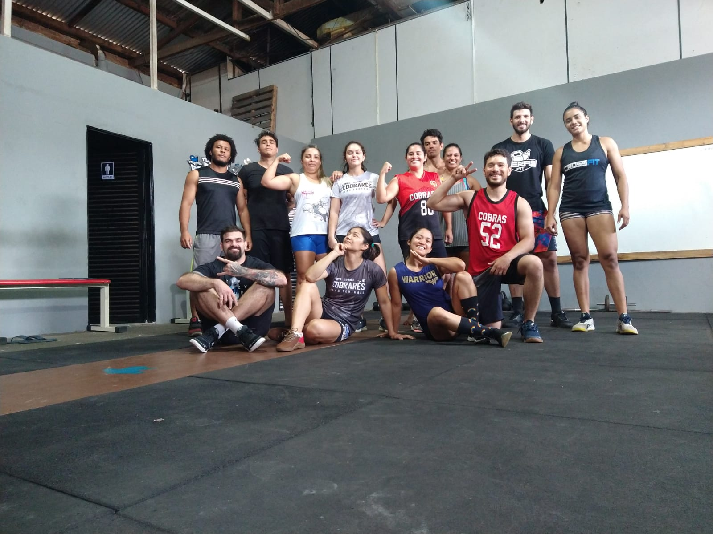

Prepare-se para mudar de vida!
O TerasFit tem um programa de treinamento de força e condicionamento físico geral baseado em movimentos funcionais, feitos em alta intensidade e constantemente variados.
Movimentos Funcionais
São todos aqueles que pode ser aplicado no seu dia-a-dia, como agachar, arremesar, saltar, levantar objetos, dentre outras atividades.
Alta Intensidade
Os treinos são realizados em alta intensidade, porém de forma relativa às condições físicas do praticante.
Constantemente Variados
Para que o corpo seja sempre estimulado a se adaptar e continuar progredindo independente do tempo de prática.
Entendendo um pouco mais...
O objetivo do TerasFit é potencializar todas as principais capacidades físicas do ser humano, como a resistência respiratória e cardiovascular, a resistência muscular, a flexibilidade, força, coordenação, potência, agilidade, equilíbrio e velocidade.
Com a facilidade de adaptação que os exercícios deste programa de treinamento proporcionam para as pessoas de qualquer idade ou nível físico.
O principal equipamento para a prática é o próprio corpo, mas também podem ser utilizadas algumas ferramentas básicas, como cordas, pesos, caixas, elásticos, correntes, entre outros que auxiliem na execução de alguns exercícios.
Benefícios
- Redução de medidas e percentual de gordura;
- Melhora na flexibilidade;
- Ganho de massa muscular;
- Definição de tônus muscular;
- Melhora no condicionamento físico;
- Melhora na qualidade do sono;
- Aumento de resistência muscular;
- Melhora no controle corporal;
- Melhora na secreção hormonal;
- Melhora no equilíbrio;
- Redução de stress;
- Espírito de equipe;
- Melhora na capacidade cardiovascular e respiratória;
- Aumento de energia;
- Treinos variados e em grupo.